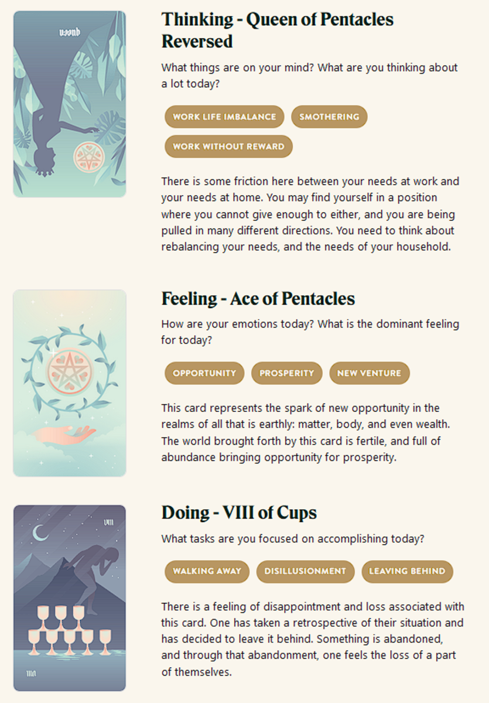

Huey's Great Resignation
TL;DR: I'm trying to build a daily creative writing habit. This post is the result of an exercise toward that end. It's probably an awful first draft of a little flash fiction scene, unless I've tried something especially weird or decided to write something meta. Let me know what you think!
Huey clomped along the open grid floor of the narrow utility corridor, tool-laden bags dangling from his well-worn belt. He muttered at a hand terminal, alternating between prodding the screen and sweeping its sensor stalk at the walls.
He cursed at the readout and came to a halt. He scratched thoughtfully at his scraggly greying beard. He tapped out a sequence with calloused fingers moving more nimbly than one might expect. The terminal chimed decisively.
"Hey there," he said to the floor.
"Hey yourself," said an upturned face, just barely visible in the dim space below. Huey could also see the glint of a weapon aimed steadily at his crotch.
A few seconds passed. The only sound was the gentle thrumming of the ship's engines.
Huey coughed. "You wouldn't happen to be a faulty network router, would you?"
"Would you believe me if I said yes?"
"Would you shoot me in the back if I kept walking?"
"Honestly? Maybe. Though, I'd prefer not to."
Huey sighed and shifted on his feet. "Mind if I take a load off?"
The gun gave a magnanimous gesture and lowered. "Be my guest."
With a groan, Huey carefully lowered himself down to the floor and sat. "Well, that's refreshing. The honesty, I mean."
"I notice you're alone and there aren't any alarms sounding."
"I bet you've also noticed that this interstellar trash heap is grossly understaffed and running on the cheap."
"I had noticed that."
"In fact, the only thing of real value onboard is an encrypted data cache."
Huey's companion chuckled. "Full disclosure: I was aware of that too."
"I figured. Otherwise you wouldn't be up to your virtual elbows trying to liberate it from my systems."
The face below sighed and the gun came back up. "So, there are alarms going off and I just can't hear them."
Huey took a deep breath, let it out. "I'm the only one who can hear them. The boss got tired of getting paged in the middle of the night."
The face said nothing, but at least the gun didn't fire.
"You want to hear something you might not know?"
"I'm not sure I can handle any more surprises."
"I'll tell you anyway: I can extract and decrypt that cache."
The gun lowered. "Why are you telling me this?"
"How many seats on your shuttle?"
"Two."
"Good. Fifty-fifty split."
"Eighty-twenty."
"Seventy-thirty. Extraction now, decryption later—after you've holstered that weapon and we're both far away."
"Sold. Now what?"
Huey rattled off some commands on the terminal. It chimed. "Cache extracted. I've also locked everyone in their cabins and shut off the comms. Let's get out of here."
The face laughed and hands reached up to push the floor panel aside. "A little help?"
"Sure," said Huey, reaching down to clasp a delicate hand and pull. Up came a lithe man with a dancer's body clad in a skin-tight vacsuit. The gun was stowed in a hip pouch. Huey whistled appreciatively.
"That awful here, huh?"
"I would have sold these assholes out for a ride, let alone cash."
"I should have haggled more. You need to grab anything on the way out?"
"Nah," said Huey, patting his belt pouches. "Anything worth anything is already on me."
"Sounds good," said the man, grinning. He gestured down the corridor. They started walking.
Prompt
Take a look at my Labyrinthos Tarot Reading!
